以 AI、自動化與設計，打造現場活動。
我是數據科學畢業生，專門建立 AI 輔助製作流程，將單一概念發展成完整、可編輯的視覺系統：社交媒體帖文、場刊、LED 牆、循環影片及印刷檔案。
香港建築師學會 70 周年 LED 牆維港循環影片（4608 × 2304 母片）
香港建築師學會（HKIA）70 周年晚宴
由一個主視覺出發（維港天際線、雲石與銀色雕塑，配以海軍藍及金色），完成整體視覺製作，包括社交媒體宣傳、舞台 LED 牆及循環影片、活動場刊、背景板、拍照道具、種子卡及場地平面圖。
每件作品均以分層、文字可編輯的檔案製作，客戶修改只需幾分鐘，毋須重新繪製。
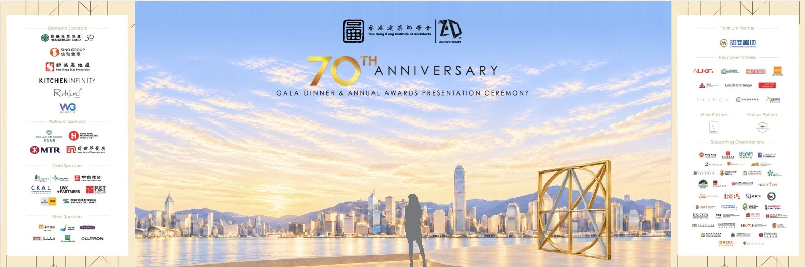


Instagram 宣傳
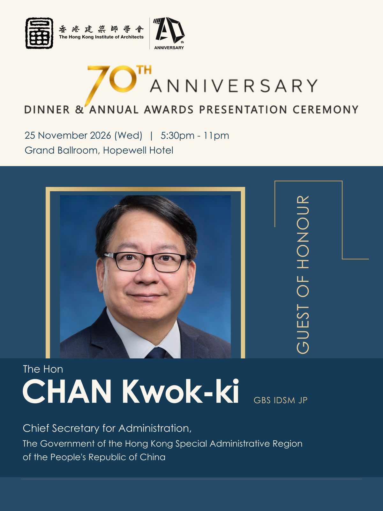
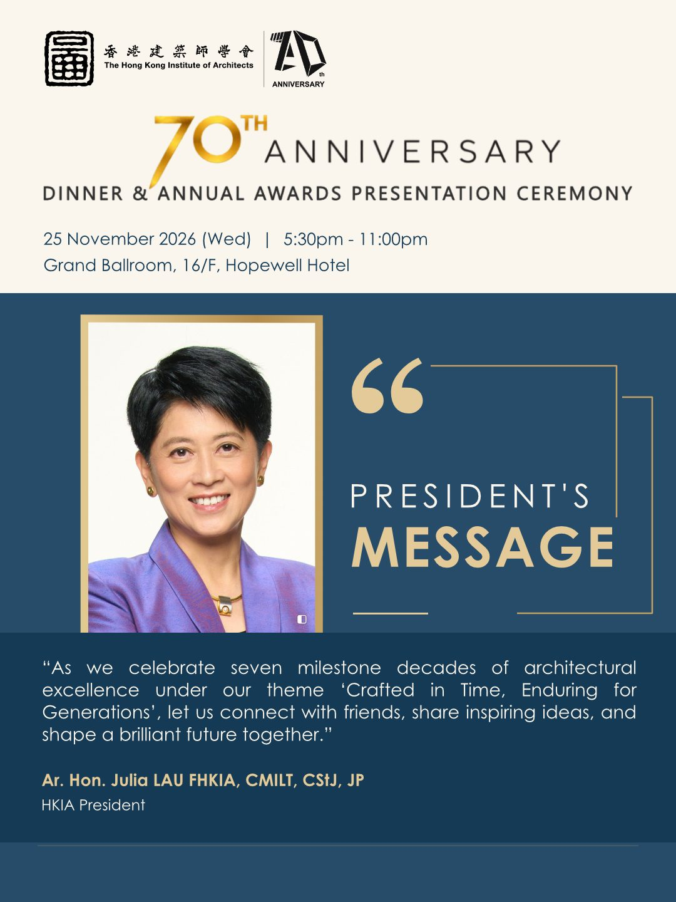
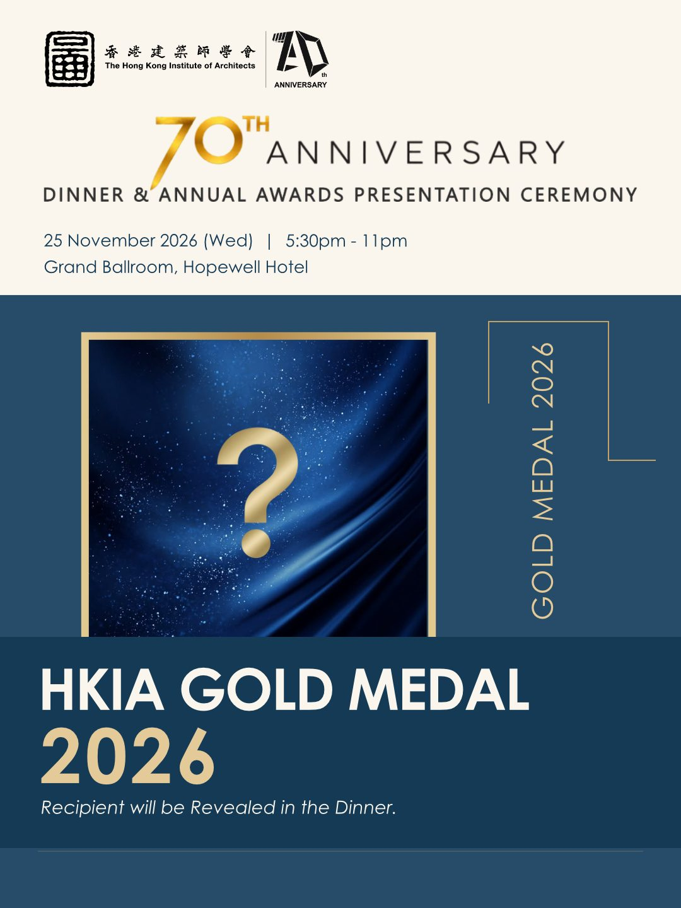


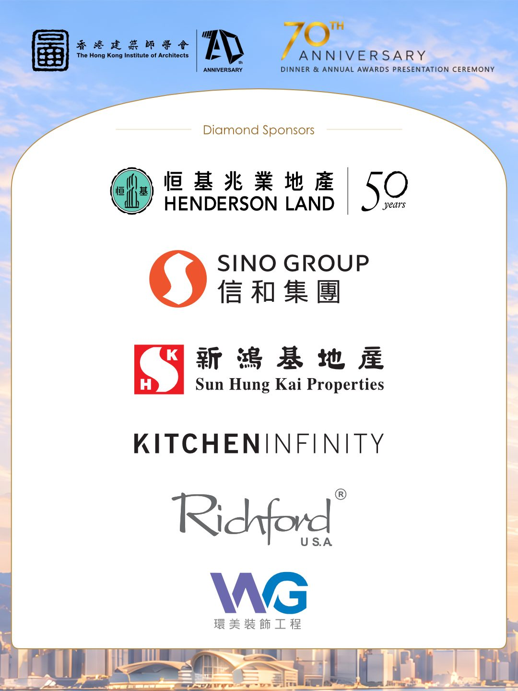
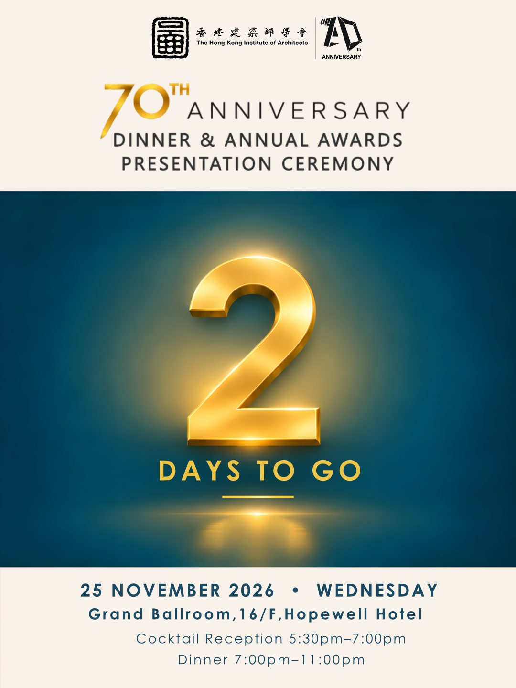
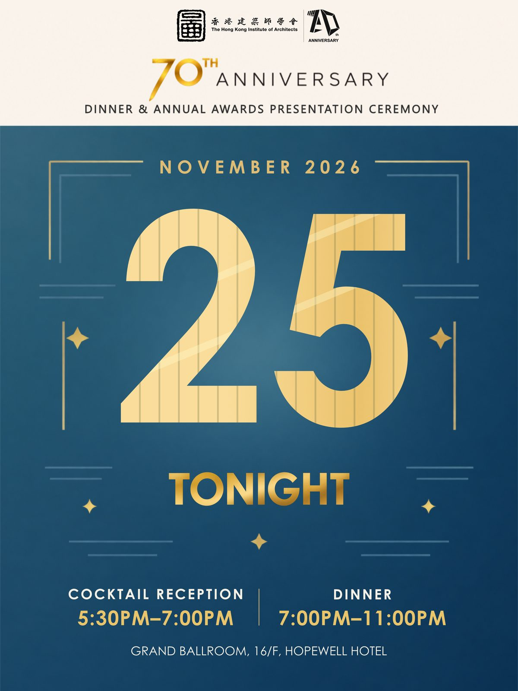
印刷品及場地佈置
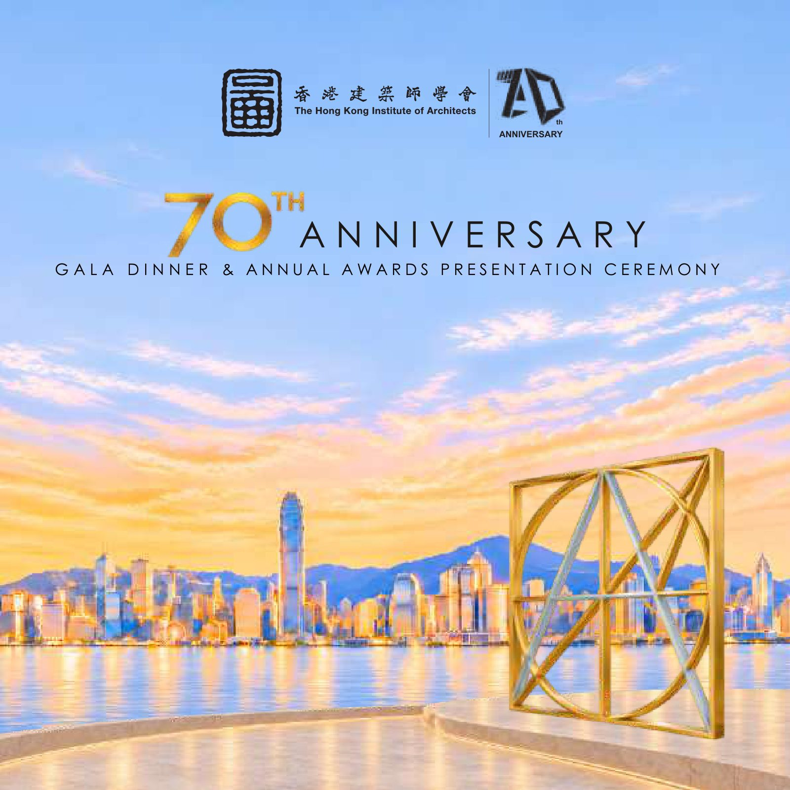

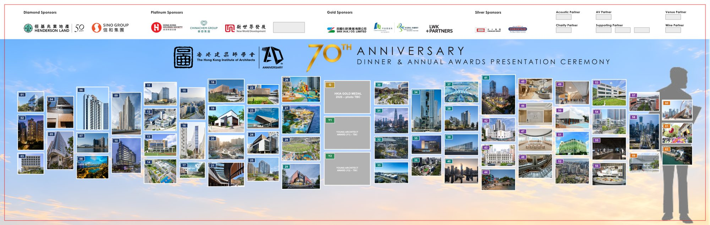
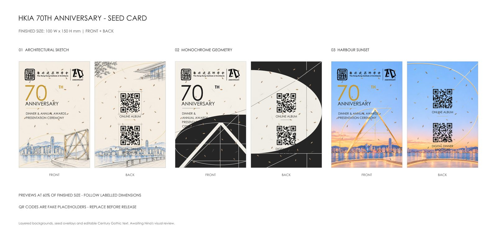
城大生成式 AI 計劃：Bright Future CraftAI 及 TKP GenAI
為中學生 AI 課程《Learning AI with AI》設計視覺形象，以及全套印刷品與社交媒體內容；亦拍攝及剪接宣傳片，結合活動實拍與 AI 生成片段。另為城大–田家炳 GenAI 計劃設計招生海報。
所有印刷檔均以 PDF/X-1a 交付，並為每款製品準備設計提案板。
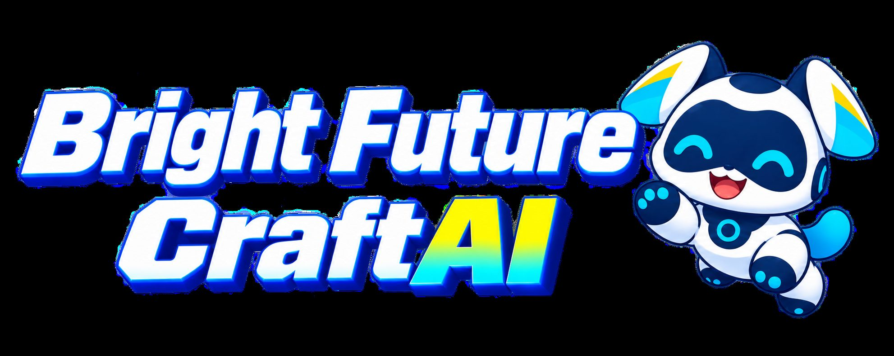
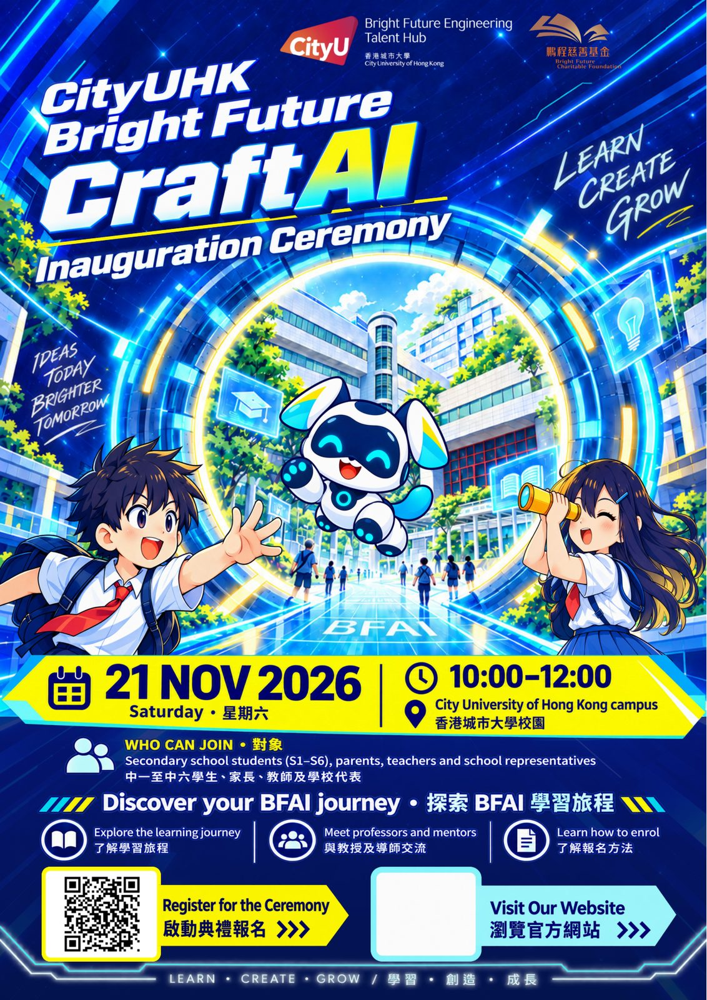


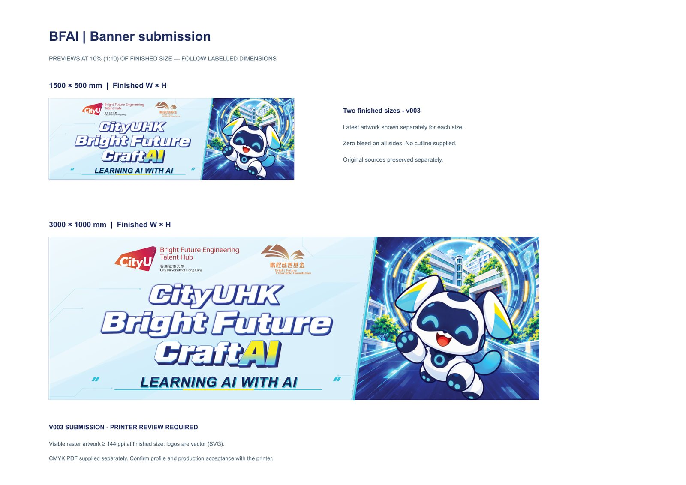


作品背後的 AI 製作流程
我建立的不是一次性的 AI 圖片，而是可重複運作的系統：由專責 AI 智能體（Claude Code 及 Codex，經 MCP 連接 Affinity）把設計簡報轉化為概念，再以自訂 Python 及 JavaScript 技能，將獲選概念重建為原生分層設計檔，文字可直接編輯，隨時可交印。
每個項目都有獨立的決策紀錄、工作日誌及檔案索引，確保每次修改都由最新的定稿開始。
智能體團隊
如何運用 AI 智能體團隊
我不會用一個對話處理所有事情，而是把製作分配給八個專責 AI 智能體，每個都有書面的角色設定、技能及准用工具。我在本機控制台選擇智能體，指定客戶項目資料夾及輸出資料夾，它只會在自己的職責範圍內工作；遇到屬於其他角色的任務，便會交接，而不是自行猜測。
這令 AI 的工作足夠穩定，可處理真正的客戶項目：核對清單、印刷檔及即時修改，而不只是示範。

更多活動作品
為會議、展覽及企業活動設計主視覺、舞台概念、動態影像及印刷品。

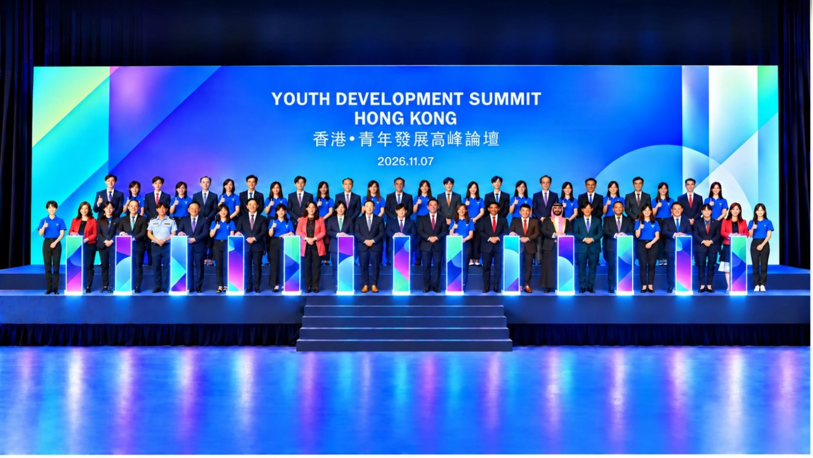


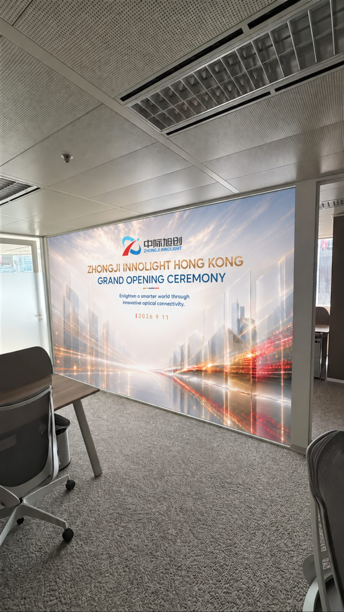
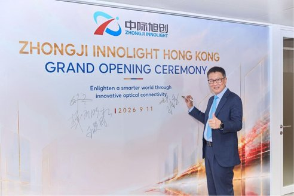
童惠楠 Nina Tung
我自 2026 年 7 月起全職任職 Eventist Hong Kong Limited 創意科技專員，為企業及機構活動設計視覺系統。至今最大型的項目是香港建築師學會 70 周年晚宴：由單一主視覺出發，完成整體視覺製作，包括 10+ 則 Instagram 帖文、活動場刊、18 × 6 米 LED 牆及 4608 × 2304 循環影片、背景板、拍照道具及 AutoCAD 場地平面圖。
這些作品背後，是我以 Claude Code、Codex 及 MCP 建立的 8 個 AI 智能體製作團隊。每份簡報先以 AI 生成三個概念方向，再以自訂的 Python 及 JavaScript 技能，把獲選方案重建為可編輯的分層設計檔及印刷用 PDF。我亦自動化管理 8 個級別共 70+ 個贊助機構標誌，涵蓋歸檔、Excel 核對清單、備份，以及按黃金比例排列標誌的 HTML 排版工具。此外，我在 Eventist 亦為另外 8 個客戶活動進行設計，包括香港法律周 2026 講者字幕條及 Zoom 版面、循環入場影片、舞台燈光概念、背景板、名牌及邀請函。
我同時兼任香港城市大學研究助理（創意設計及媒體），負責 TKP GenAI 計劃及 Bright Future CraftAI 計劃的創意設計、攝影、錄影及剪接；並曾於 TKP GenAI 計劃向中一至中三學生教授生成式 AI。
- 教育背景
- 香港城市大學數據科學理學士（2026）
一級榮譽、優等（Cum Laude）· 院長嘉許名單 ×4 - 核心技能
- Python · 機器學習 · 深度學習 · AI 智能體團隊（Claude Code、Codex、MCP）· 生成式 AI
- 設計及製作
- Affinity · AutoCAD · CapCut · 印刷製作（PDF/X-1a、出血、刀模）
- 語言
- 粵語（母語）· 英語 · 普通話